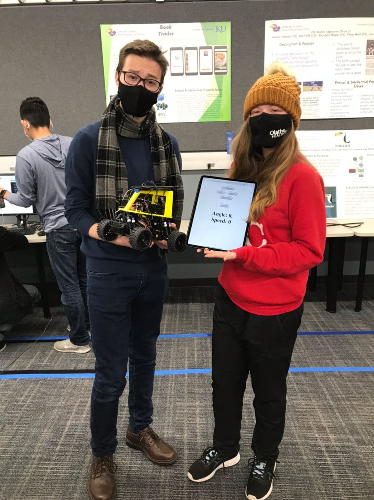
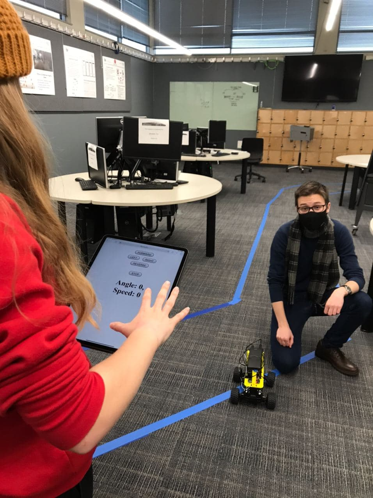
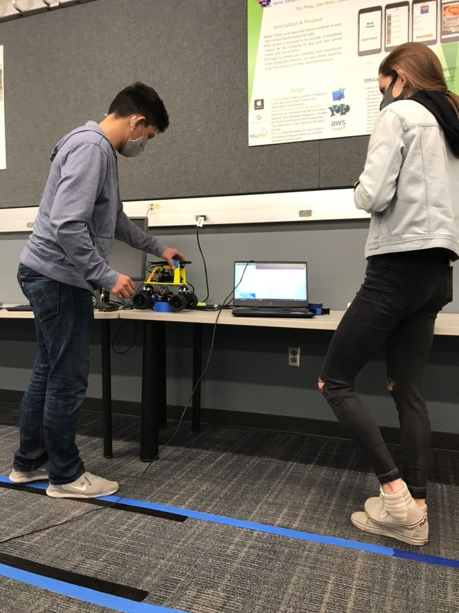
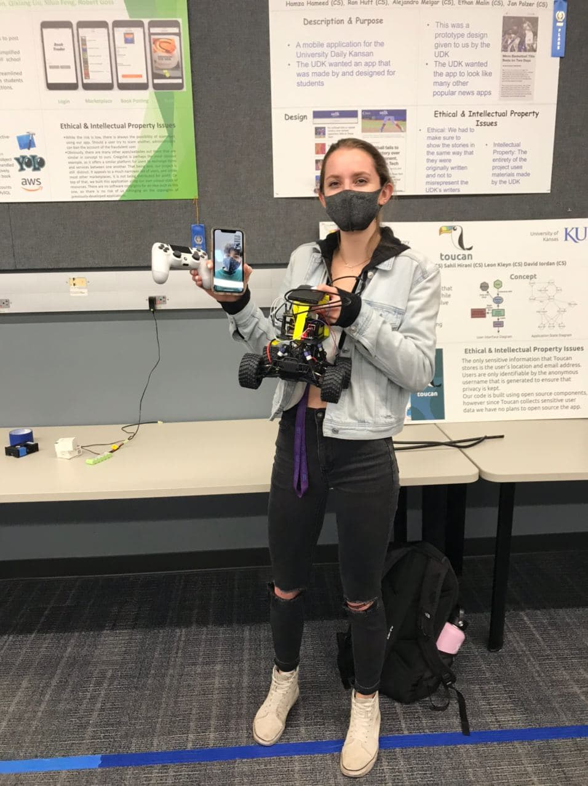
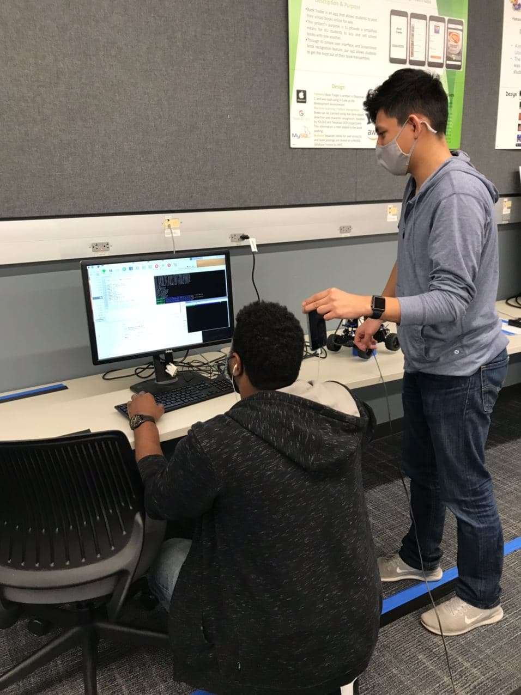
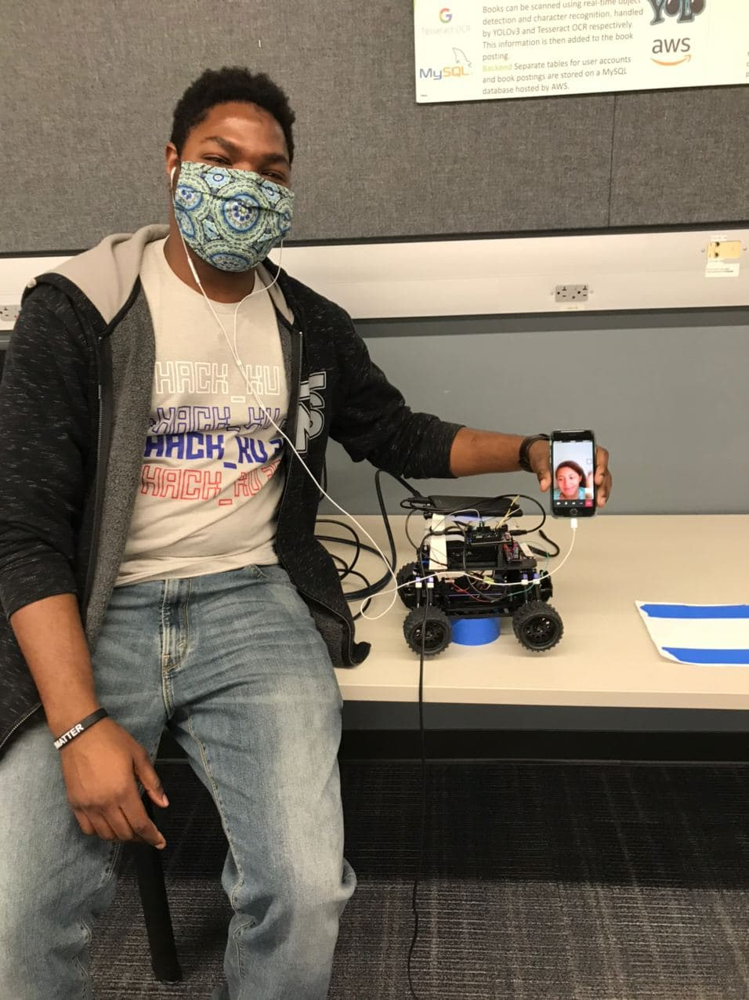
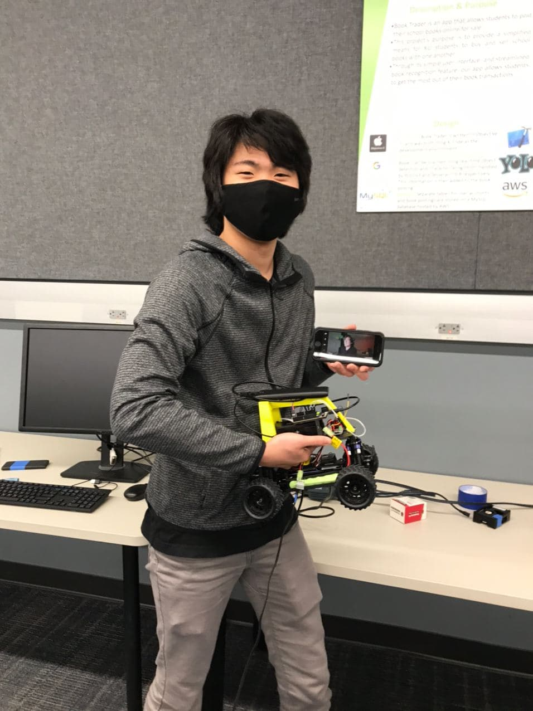

Selected Final Projects
Embedded Systems
Table of Contents
1 Web Server Car by Embedheads
Sandy Urazayev and KayLee Mitchell
- Motivation
After completing the standard milestones, KayLee and I were out for blood. We wished to do something fun and daring. A way to combine the past and the future into a single project; let it breathe a little. We came to an idea of writing our car in C/Assembly and making the controls with HTML/Python.
- Design
The design is incredibly simple. We utilize the basic motor control functions written in C that we used in milestones 1-3; we add a couple more functions, such as
reverse,steering, andangle. And we would need a webserver that listens to any incoming HTTP connections to send commands through the serial to our motor controller. Finally, some simple HTML page to make the web server endpoints call more bearable. The design schematic would look like:------- +------------+ +-----------+ ( user )-----+ HTML Page +----+ Web Server| ------- +------------+ +-----+-----+ | Serial ---> | | ------- +----------------+ +---+----+ ( Metal )-----+ Motor +---+ HiFive | ------- | Controller | +--------+ +----------------+
- Implementation
In a project like this, where the programs to full-stack and beyond, everything that can go wrong, will go wrong. Fortunately, nothing went too wrong. Our design schema above proved to be the best design choice we could pursue. The hardships we encountered were due to linux permission management and university network connections limitations.
For example, the local network didn't allow us to allocate LAN. We used our own router, where we would connect the raspberry pi on the car and any other browser-capable device that wants to control the motor.
Let us show an example of a web browser call. Any device can connect to the HTTP server of the car and using query parameters (or body parameters) send the values that have to will relay to the motor controller.
@app.route("/kaylee") def sandy(): angle = request.args.get("angle") speed = request.args.get("speed") if angle is None or speed is None: return "You're trash" ser1.write(bytes("angle" + str(int(angle)) + "\n")) ser1.write(bytes("speed" + str(int(speed)) + "\n"))
- Results
The end product was an astounding success! We had a simple HTML interface to increase car's speed by certain increment; turn car's wheels left and right by some other increment value. The response feeling was astonding. Delay was small thanks to our straight-forward design and proper memory management. Any user with a laptop, phone, or a tablet could connect to our network and control the car just the way they like!


2 Bluetooth-Controlled Car by Big Dogs
Connor Sutton and Aidan Schmelzle
- Motivation
We felt that adding a method of manually maneuvering our car would be a great way to elevate our project, and it was something that would be a lot of fun to play around with. For many, remote-controlled cars are a source of childhood nostalgia, and to implement that functionality ourselves was a very exciting idea. We also felt that we had all the means and resources necessary to accomplish the task.
- Design
At first, the implementation seemed like it would be quite trivial. In the base project, the Raspberry PI sends information from the neural network to the Hi-five board through the UART, and this information is interpreted to manipulate the motors that control the car’s movement. All we had to do was write a python file that sends information to the UART in the same way, except that the source of this information would be inputs from the controller rather than the output of the neural network. The most daunting task was to set up the Bluetooth connection between the controller and the Raspberry Pi.
- Implementation
At first, our implementation went according to plan. We encountered some major, unexpected hardships, however, when we were trying to use the information received by the HiFive to actually manipulate the motors. We could get the steering angle to change correctly, but trying to change the speed of the car resulted in all sorts of weird, seemingly inexplicable errors, and the more we tried to fix it, the weirder our issues became. In trying to solve our problem, others arose, and soon even the steering stopped working. When it was our turn to demo, we were essentially back at square one and in trouble.
- Results
In a miraculous display of dedication and willpower, Aidan solved the mysterious issues preventing our car from operating, and we were able to successfully demo our project. We learned a lot about working with hardware and bare-metal programming through this project. It also reinforced the fact that implementation of an idea is hardly ever as simple as it sounds, but in the end, the difficulty increases our understanding and heightens the sense of reward and accomplishment.
Enjoy some videos from the demo day! Video 1 Video 2 Video 3


3 Reversing Anti-collision Blinker Car by Black Box
Jonelle Gamble and Abdoul Diallo
- Motivation
One of the main motivations while doing this lab was to put our knowledge of programming into practice. We learned some C programming during lectures, that added to prior knowledge of C++, and it was a fun project to work on. We were able to see our code’s effects not only through monitors but making an object move/stop (the car). Another thing is that we learned a lot while doing this project, because we had to deal with many areas, we had not been exposed to prior to taking this class.
- Design
We initially thought, for the reverse function of the car, we only had to set the speed to reverse to get it to work properly. For the anti-collision, our initial thoughts were to write code similar to lab 3 that gets information form the lidar sensor. However, instead of changing the light on the HiFive Board, we would call the stop car function when an object is detected 75cm away. Lastly, our initial thoughts for blinker lights were to put together what we learned in lab 4 and 5 where we blinked lights different colors and used interrupts. We also knew that we would need an if statement to check whether the steering was turning right or left (-45 to 0 or 0 to 45 degrees) and change the color of the light accordingly.
- Implementation
We changed the reverse function to match the graph that was shown by the TAs, because the reverse option of the cars are locked when they go forward. We implemented something called a double click to decrease the speed of the car slowly to the reverse, then back to neutral, before setting it slowly to the reverse speed again. The hardship encountered while testing the reverse function is that the cars needed to be calibrated at start. The last speed run by car before it turns off is set as the neutral on the next start. As for the Lidar, our initial thoughts were correct. However, we spent some time trying to set up the UARTS on the HiFive, since one was used by the Pi already. The pins were also inverted on the board for the connections. Moreover, the delays in the main function made it so the Lidar was sending information later than it should for the car to stop at the right moment. The blinker also complained because of delays and the position of the code for the interrupts inside the main function mattered. We made it work by updating a variable which handled the led index to turn on according to the degree of the steering angle. We also had to remove and put back the code for a version specification in the Pi, because the Raspberry Pis have different software versions. We wanted to implement a remote controller with Bluetooth, but we couldn’t get a controller.
- Results
Our code worked when we showed it to TAs during lab, however, when demoing it we had to change the code to make the camera work, because we were given a car with a different OS version for the Pi. We also needed to add delays in so that the TAs could calibrate the car before it starts running. For the results of our demo, everything worked correctly except our blinkers were not blinking at the correct rate/frequency. We think that this project was a lot more challenging compared to the previous labs, however, it was very rewarding due to the knowledge we gained.


4 Self-Guided Car with a memory by Jeng-Atkins
Joshua Jeng and Thomas Atkins
- Motivation
Having implemented Milestones 1-3 in a relatively streamlined fashion, we were each looking for a challenge for Milestone 4. We each took a task and implemented it, with Thomas taking the course mapping and Joshua trying to implement the collision avoidance task.
- Design
In Lab 3, we had implemented range detection using a LIDAR sensor connected to a Hifive board through UART 0. Thus, it seemed simple to transfer that code over and modify it to use UART 1 and stop the motor when within range of an obstacle. For the course mapping portion we planned on just creating a log in memory of what was being sent to the car and then writing it to a file to be read later.
- Implementation
For the LIDAR, initially, it seemed that the implementation process would be as simple as copying the code from Lab 3 into the project, and modify it to use UART 1 rather than UART 0, as was used back then. However, this ended up proving extremely challenging. Debugging showed that the code worked when using UART 0, hinting that the problem lay deeper than our code. From there, switching boards, double-checking the Hifive pinouts, and so forth yielded no insight into the ultimate cause of the issue.
The course mapping implication unutilized two different files for the mapping of the course and the repeating the course. This was done to avoid the hassle of having two have a command line switch and two different branches in the main loop. In the writing we simply left the script mostly the same and only added a few time checks and logged the info. The log file consisted of the angle that was sent to the car and time information about when it started to go at that angle and then when it switched to a new angle. The reading file required more work to get up and running as it required rewriting most of the main loop to check the values in the log file instead of inference from the camera.
- Results
The main demonstration on the track was apparently very successful. While the actual self-driving was rather suspect, the car did attempt to make the correct adjustments based on the camera input. Due to the aforementioned issues with the LIDAR, the collision avoidance extra credit was never tested. The course mapping aspect of milestone 4 was successful. We were able to replicate the angel sent to the HiFive board during our demonstration.
